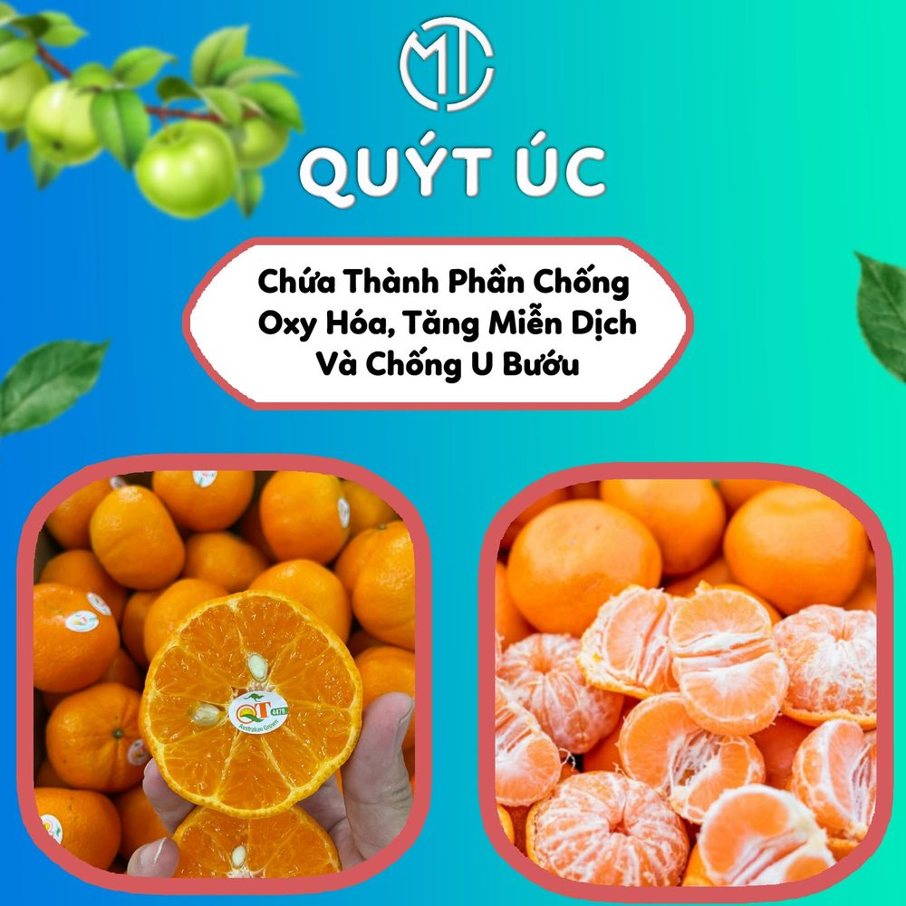
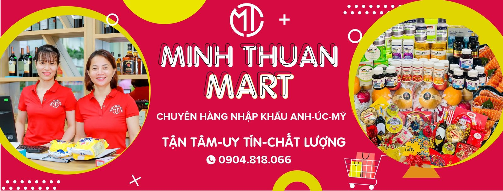

Open to marketing rolesManchester, UK--:-- here now
I make the ads,run them, and readwhat the feed says back.
I'm Son, a digital marketing executive. I write the scripts, direct the shoots, edit the ads and then answer for the numbers. I can start now, and I don't need visa sponsorship.
I learned marketing on a shop floor in Haiphong, Vietnam, where a good post meant more people through the door the next day. That's still the test I put every ad through: did it make someone do something? The rest of this page is what happened when I took that question to bigger budgets, new markets and a new country.
Where I'm from
I grew up in Haiphong, Vietnam, a port city in the north, studied in Hanoi, Vietnam, and moved to the UK in 2025. I work in English (IELTS 8.0) and Vietnamese, and I'm working towards JLPT N3 in Japanese.
Off the clock
Games, anime, film and comics, plus video editing for fun. When a brand talks to fans I'm usually one of them, so I can tell when a line was written by someone who has never played the game.
£2,300
in recorded sales from one three-week Meta campaign
Digiphar, 2024
30+
video ads I scripted and edited, launched in sets of two or three variants
Digiphar, 2024
6+
ad shoots with international actors, on production budgets of up to £3,000
Digiphar, 2024

+15%
more repeat customers, from personal follow-up after each sale
Minh Thuan Mart
Selected work
Four briefs, and what I did with them.
Hover a title for a preview. Each one opens the full story: the problem, the work and the result.
My MSc supervisor, my team leader at Digiphar and the owner of the shop where I started. Use the arrows to read all three. Full references are available on request.
“
I supervised Son's MSc dissertation at the University of East Anglia, and it was one of the strongest pieces of work I read that year. He is a thorough researcher who built his own dataset from scratch, and he handled a demanding workload with real maturity. I recommend him without hesitation.
CCCarlos Cordova CheaDissertation supervisor, University of East Anglia
Son is smart and catches on to new things quickly, but creative is where he really stands out. He comes to the table with ideas, writes them up and turns them into ads that are ready to test.
DPTeam Leader, Media and AdvertisingDigiphar, Hanoi, Vietnam
Son brought a professionalism our local shop didn't have before. He built us a proper system for our social media, one we could keep running ourselves after he moved on.
MTOwner, Minh Thuan MartHaiphong, Vietnam. Translated from Vietnamese.
01 / 01
What I bring to a team
Three jobs I can take off your desk.
Whatever the marketing role, these are the three jobs I do best. Hire me for one and you get help with the other two.
Run it
Paid social
The daily running of Meta campaigns, from the first setup to the morning check.
Sales and click-to-message campaigns, named so they can be compared
Audience targeting and segmentation
Budget moved towards what converts, away from what doesn't
UTMs, the Meta pixel and conversion events set up properly
Every market's copy proofread before launch
Every morningI checked cost per result in each market before anyone asked
Make it
Ad creative
The ads themselves, made in-house, so a test never sits waiting in a design queue.
Hooks and copy written for the first three seconds
Video ads cut in Premiere Pro and After Effects
Statics and thumbnails in Photoshop and Illustrator
A full set of variants ready before launch day
Commercial scripts, and directing the shoots that film them
Same personreads the results and makes the next version, so nothing is lost in a handover
Measure it
Research and reporting
Finding out what's working before more money goes in, and saying it plainly.
Meta Ad Library and competitor research before a brief
Performance tracking in Google Sheets and Excel
ROAS, cost per result and budget pacing
Google Analytics 4 and Google Ads Search certified
Regression analysis in Python (pandas, statsmodels)
83 reportsFTSE 100 annual reports I read in full and scored by hand for my dissertation
My MSc dissertation
Does talking about AI make a company worth more?
For my MSc at UEA I read the 2025 annual reports of 83 FTSE 100 companies and checked their AI claims against patent records and financial data. It scored 85%.
Since ChatGPT arrived, almost every big company talks about AI in its annual report. I wanted to know whether that talk tells investors anything real.
How I did it
Built a scoring framework of 8 AI themes, with the rules fixed before I read a single report
Read every report in full, from 14,000 to 329,000 words, and counted AI terms against report length
Matched each company to its AI patents on Lens.org and its financials from LSEG
Tested the links with six regression models in Python
What I found
Companies that talked more about AI had a somewhat higher market value, but the result was weak and rested largely on one company
There was no reliable link with profit
Having AI patents didn't make the AI talk count for more
What I took into marketing: when nearly half the companies cover 7 or 8 of the 8 themes, covering them stops setting anyone apart. Ad claims work the same way. Being specific is what stands out.
Talk versus proof, FY2025
40 of 83covered at least 7 of my 8 AI themes
21 of 83had an AI patent family I could trace, 2020 to 2024
Each dot is one company. The two measures were only loosely linked (a correlation of 0.34), so how much a company says about AI tells you little about what it has patented.
What it trained me to do at work
The skillIn the dissertationIn your team
Set the rules first
In the dissertationI wrote a coding manual for the 8 AI themes and fixed it before reading any reports, so my scores couldn't drift towards the answer I wanted.
In your teamNaming conventions, KPIs and test plans agreed before a campaign goes live, so results can be compared fairly.
Make messy data line up
In the dissertationThree sources: annual reports, Lens.org patents and LSEG financial data. I matched subsidiaries to their parent companies and scaled keyword counts to report length.
In your teamMeta, GA4 and sales figures joined into one report, with big and small campaigns compared on the same scale.
Tell a real result from noise
In the dissertationSix regression models in Python (pandas and statsmodels), controlling for company size, debt and sector, with error estimates suited to a small sample.
In your teamCalling an A/B test only when the gap is real, and saying so when the sample is too small to call.
Check the odd number
In the dissertationOne company's return on assets was over 100%. I assumed it was my spreadsheet error, checked the published accounts and found it was right: Rightmove's value is its brand and website, which accounts don't record.
In your teamWhen a dashboard spikes, I find out why before the number reaches a client or a manager.
Say what the data can't show
In the dissertationMy main hypothesis wasn't supported. I worked out the smallest effect 83 companies could detect, and reported that the study was too small to tell, not that there was no effect.
In your teamFlat results reported plainly, with the reason and what to try next.
Plan for the slow part
In the dissertationCollecting the data took far longer than analysing it, and I cut my plan from three years of data to one. Next time I'd run five companies start to finish before setting the timetable.
In your teamNew projects tried on a small batch first, so the deadline is based on how long the work really takes.
The full dissertation, AI Disclosure, Formalised Innovation Activity and Firm Performance, is available on request.
At Digiphar every ad had to earn its budget: £600 in revenue with spend under a third of it, roughly a 3:1 return. I passed my probation with spend held below 32%. The panel shows how I decided which ads got more money: four ads are measured against 3:1, then sorted by the rules under the table. The numbers are made up; the 3:1 target was real.
Research. Check the Ad Library and what already wins in the category.
Build variants. Hooks, angles and formats, all ready before launch.
Launch and watch. Cost per result every morning, tracked with UTMs and the pixel.
Shift and feed back. Scale the winner, cut the rest, brief the next round.
Creative test, round 1Simulation
Revenue goal£600per cycle
Spend cap≤33%of revenue
Best return–this round
VariantReturn vs 3:1 targetAction
Hook A, problem first
waiting
Hook B, social proof
waiting
Static C, offer-led
waiting
Video D, founder story
waiting
ScaleBest return this round: it gets more budget
Keep3:1 or better: leave it running
Iterate2:1 to 3:1: make a new version
CutUnder 2:1: stop it
Four ads, one budget. Run a round to see where the money goes.
How I got here
Haiphong, Vietnam, to Manchester, UK

2021Haiphong, Vietnam
Where it started
My first marketing job was at a neighbourhood mart: writing the posts, planning the promotions and learning the regulars by name.
2021–2025Hanoi, Vietnam
Learning by shipping
Alongside a marketing degree at NEU, I wrote Amazon listings for a print-on-demand shop and started a gaming channel that I scripted and edited myself.
2024Hanoi, Vietnam
My first real budget
At Digiphar the ad spend was real money and the targets were strict. I wrote the commercials, directed the shoots, and learned to stop guessing and test everything.
2025–2026Norwich, UK
A new country, a harder degree
I moved to the UK for an MSc at UEA and finished it with a Distinction. Alongside it I worked part-time at a Korean supermarket in Norwich, and appeared in the shop's Instagram Reels: my first content for a UK audience.
NowManchester, UK
The next chapter needs a marketing team
I'm open to any marketing role, and happiest where I can plan campaigns and make the content for them. I can start straight away.
Grew the Facebook page by 1,000 followers in six months with a content calendar, Canva visuals and small paid campaigns
Raised average daily sales by 12% through personalised recommendations, email and direct follow-up
Worked with the in-store sales team to turn customers' questions into posts and promotions
Built keyword research into Amazon titles, bullet points, descriptions and backend search terms
Turned design-trend research into new product ideas, mock-ups and Seller Central listings
MSc, Distinction, 2025–2026
Digital Business and Management, University of East Anglia
Dissertation (85%) on AI disclosure in the FTSE 100: my own coding framework, matched against Lens.org patent records and LSEG financial data, and analysed with regression in Python. How I did it
BSc, 2021–2025
Marketing
National Economics University, Hanoi, Vietnam. GPA 3.1 out of 4.